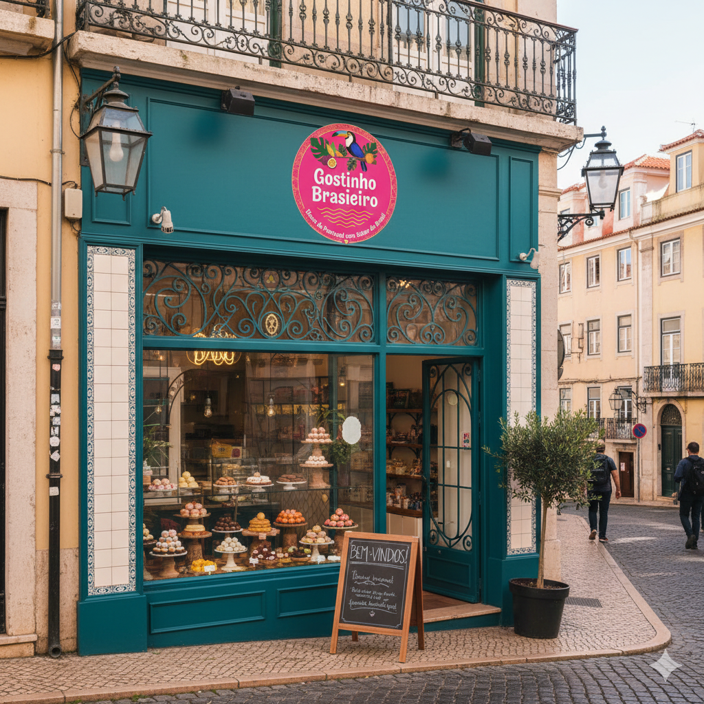

Galeria de Fotos


A Gostinho Brasileiro é uma doceria dedicada a trazer os sabores típicos do Brasil para perto de você. Trabalhamos com receitas tradicionais, ingredientes selecionados e muito amor em cada preparo.
Estamos localizados em Lisboa - Postugal, em um ponto turístico: Miradouro Santa Luzia
Missão:Temos como missão encantar clientes em Lisboa com o verdadeiro sabor dos doces brasileiros, oferecendo produtos frescos, autênticos e preparados com carinho, levando um pedacinho da doçura e da cultura do Brasil para cada pessoa que entra na loja.
Visão:Nossa visão é ser referência em Portugal como a melhor loja de doces brasileiros, reconhecida pela qualidade, inovação nos sabores e pela experiência acolhedora que conecta as tradições do Brasil ao estilo de vida lisboeta.
Valores: Amor pelo que fazemos, qualidade, tradição e respeito ao cliente.
| Produto | Preço £ | Preço R$ |
|---|---|---|
| Brigadeiro | £ 1,55 | R$ 9,59 |
| Paçoca | £ 1,55 | R$ 9,59 |
| Doce de Abóbora | £ 1,55 | R$ 9,59 |
| Pé de Moleque | £ 1,55 | R$ 9,59 |
| Café | £ 1,00 | R$ 6,19 |
Email: doces@gostinhobrasileiro.com
Telefone: +351 912 345 678
Instagram: @gostinhobrasileiro